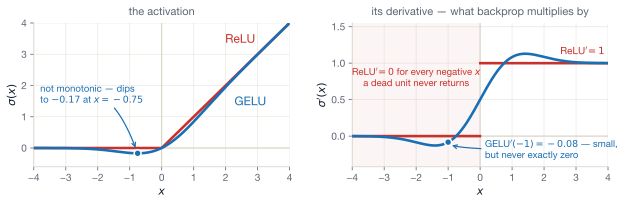
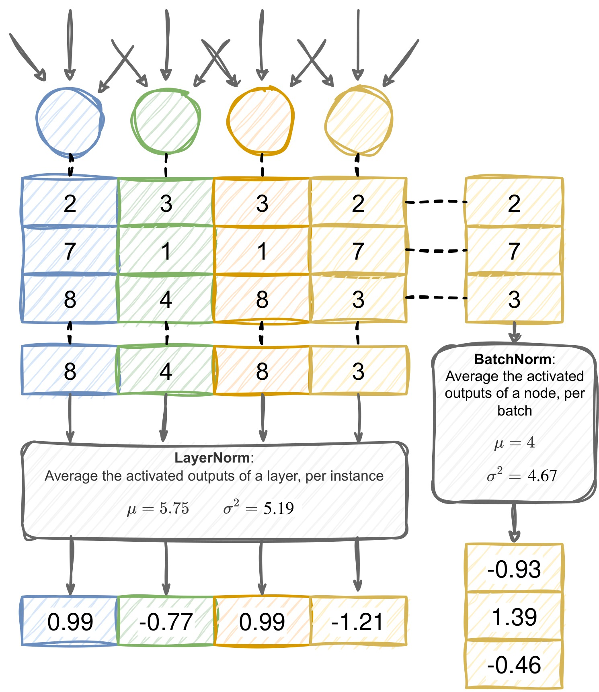

Lecture 5 — Real models, real data, real choices
August 10, 2026
After Thursday’s lecture
Four days writing autodifferentiation by hand. From today, you never have to again
Question for today:
How do we build neural networks at scale – in PyTorch, on real data, with a working classifier?
Concepts in practise
Moving from “understanding the algorithm” to “building a useful model”.
After today, every remaining lecture uses PyTorch.
Value to PyTorchPyTorch is the autodiff library you built — only:
The mental model is identical to your Value library. Same forward pass. Same backward pass. Same parameters, gradients, and updates.
Note
The point of last week was to demystify what PyTorch does. Now we let it do that work for us — and we focus on design instead of bookkeeping.
You have met tensors already in the labs:
import torch
x = torch.tensor([1.0, 2.0, 3.0]) # 1-D tensor (a "vector")
W = torch.randn(4, 3) # 2-D tensor (a "matrix"), random-init
y = x @ W.T # matrix multiplication
print(y.shape) # torch.Size([4])Tensor properties
.shape — dimensions..dtype — float32, int64, etc..device — cpu or cuda:0..requires_grad — should we track gradients?Operations
@ or torch.matmul — matrix multiply.+, -, *, / — element-wise.torch.exp, torch.log — element-wise math..sum(), .mean() — reductions.x = torch.tensor(2.0, requires_grad=True)
y = x ** 3 + 4 * x # y is a Value-like node — PyTorch builds the graph
y.backward() # backpropagate from y
print(x.grad) # → 16.0 (which is 3x² + 4 evaluated at x=2)That is the whole API for autodiff in PyTorch.
You can build any expression with tensors, it will automatically track the resulting graph.
When you call .backward() on the scalar output tensor, you can then read off .grad from the inputs to see the results!
This is exactly the algorithm you have been working on by hand.
nn.Moduleimport torch.nn as nn
class TurnoutModel(nn.Module):
def __init__(self):
super().__init__()
self.fc1 = nn.Linear(3, 16) # 3 inputs → 16 hidden neurons
self.fc2 = nn.Linear(16, 1) # 16 hidden → 1 output
def forward(self, x):
h = torch.relu(self.fc1(x)) # hidden layer with ReLU
return self.fc2(h) # output (logit)nn.Linear(k, h) — a fully-connected layer with k \cdot h weights and h biases. Initialised for you.nn.Module — is a base class that tracks parameters and provides key methods like .parameters(), .train(), .eval(), .to(device).forward() — defines what you mean by “run the model forward”. PyTorch auto-builds the backward pass.nn.SequentialWhen the network is just a straight stack of layers, you don’t need to write a class at all. nn.Sequential chains modules and runs them in order:
import torch.nn as nn
model = nn.Sequential(
nn.Linear(3, 16), # 3 inputs → 16 hidden
nn.ReLU(), # activation — now an explicit layer, not a function call
nn.Linear(16, 1), # 16 hidden → 1 output (logit)
)This is exactly the TurnoutModel from the previous slide — same layers, same forward pass, same parameters:
\underbrace{3 \times 16 + 16}_{\text{layer 1} = 64} \;+\; \underbrace{16 \times 1 + 1}_{\text{layer 2} = 17} \;=\; \mathbf{81 \text{ parameters}}
The differences are cosmetic
torch.relu(...) (a function) becomes nn.ReLU() (a layer object)forward() to write as Sequential calls each module in order.Use nn.Module when the forward pass branches or reuses and nn.Sequential for simple, feedforward stacks.
model = TurnoutModel()
optimizer = torch.optim.Adam(model.parameters(), lr=1e-3)
loss_fn = nn.BCEWithLogitsLoss()
for epoch in range(50):
for x_batch, y_batch in train_loader:
optimizer.zero_grad()
y_logits = model(x_batch) # (B, 1) — a column
loss = loss_fn(y_logits.squeeze(-1), y_batch) # y_batch is (B,) — a row
loss.backward()
optimizer.step()
print(f"Epoch {epoch:02d}: train loss = {loss.item():.3f}")Every PyTorch training loop in the world looks roughly like this.
We’ll change what’s inside the loop but the shape of this training protocol stays the same.
Why .squeeze(-1)? The last layer is 16 \to 1, so a batch of 32 comes out as shape (32, 1). The labels arrive as (32,) — i.e. a flat vector.
(32,).Module whose forward() you wrote).A quick reminder why we need non-linearities
Without non-linearities, stacking layers buys us nothing: \mathbf{x} \mathbf{W}^{(1)\mathsf T} \mathbf{W}^{(2)\mathsf T} \cdots \mathbf{W}^{(L)\mathsf T} = \mathbf{x} \mathbf{W}^*\mathsf{T}
— still just a linear function of \mathbf{x}, regardless of L.
Non-linear activations between layers are what gives deep learning its advantage
\sigma_{\text{ReLU}}(x) = \max(0, x), \qquad \sigma'_{\text{ReLU}}(x) = \begin{cases} 1 & x > 0 \\ 0 & x < 0 \end{cases}
The downside
Dead ReLUs. If a neuron’s pre-activation stays \leq 0, its gradient is always 0 — it stops learning.
Smoother variants (Leaky ReLU, GELU, SiLU) address this.
Default choice in 2026: use ReLU (or close cousin GELU) in hidden layers.
The overwhelming majority of feed-forward networks built in research do this. PyTorch: nn.ReLU().
\sigma_{\text{ReLU}}(x) = \max(0, x) \qquad\qquad \sigma_{\text{GELU}}(x) = x \cdot \Phi(x)
\Phi is the standard-normal cumulative distribution function. GELU is just a softer version of ReLU.

Since backprop multiplies by \sigma', ReLU' is a step – exactly 0 for every negative input. GELU' is never exactly 0: at x = -1 it is -0.083.
Never really worth using GELU on a simple network, but very useful for transformers as we’ll see later!
Sigmoid
\sigma(x) = \frac{1}{1 + e^{-x}}, \quad \sigma'(x) = \sigma(x)(1 - \sigma(x))
Tanh
\tanh(x), \quad \tanh'(x) = 1 - \tanh^2(x)
Identity
\sigma(x) = x
Softmax
\sigma_i(\mathbf{z}) = \frac{e^{z_i}}{\sum_j e^{z_j}}
Worked: softmax of \mathbf{z} = [2, 1, 0]
Exponentiate each score, then divide by their sum:
e^2 = 7.39, \quad e^1 = 2.72, \quad e^0 = 1.00, \quad \textstyle\sum = 11.11
\sigma(\mathbf{z}) = \left[\tfrac{7.39}{11.11},\ \tfrac{2.72}{11.11},\ \tfrac{1.00}{11.11}\right] = [0.67,\ 0.24,\ 0.09]
Three positive numbers that sum to 1, i.e. a probability over three classes
Hegre et al. (2022) — Forecasting fatalities.
The input vector: country indicators, lagged casualties, conflict history, geographic features, economic indicators.
The output: a single number — the predicted log fatalities for the next month.
A reasonable architecture:
Train with MSE loss and Adam at \lambda = 10^{-3} for ~100 epochs.
This is exactly the kind of model you’ll build in today’s lab.
≈ 20 min · in pairs
The pre-activation value:
z = -3.5
For each activation, compute (or estimate) the post-activation value \sigma(z):
Then for each, give the derivative at z = -3.5.
| Activation | \sigma(-3.5) | \sigma'(-3.5) |
|---|---|---|
| Identity | -3.5 | 1 |
| ReLU | 0 | 0 |
| Sigmoid | \approx 0.029 | \approx 0.028 |
| tanh | \approx -0.998 | \approx 0.004 |
The lesson On the negative side at |z| = 3.5:
That is why most modern hidden layers use ReLU.
| Problem | Output activation (applied inside the loss — don’t add it yourself) | Loss in PyTorch |
|---|---|---|
| Regression (continuous) | identity | nn.MSELoss |
| Binary classification | sigmoid | nn.BCEWithLogitsLoss |
| Multi-class classification | softmax | nn.CrossEntropyLoss |
| Multi-label | sigmoid per class | nn.BCEWithLogitsLoss |
Tip
BCEWithLogitsLoss and CrossEntropyLoss bundle the sigmoid/softmax with the loss so don’t apply the sigmoid activation yourself. This combined version is more stable.
Predict Suppose we set every weight to exactly 0 before training. What goes wrong on the first step — and could training ever recover?
Answer — the symmetry trap
If every weight starts at 0:
Random initialisation breaks the symmetry. But the scale matters too: too big and activations explode; too small and they vanish — the same vanishing/exploding problem we saw with sigmoid, now driven by the weights, not the activation.
Xavier (Glorot)
For sigmoid / tanh: W^{(l)} \sim \mathcal{N}\!\left(0, \tfrac{2}{n^{(l-1)} + n^{(l)}}\right)
Keeps the variance of activations stable across layers.
When the layer’s fan-in and fan-out are similar this reduces to the fan-in (LeCun) form \tfrac{1}{n^{(l-1)}}.
He (Kaiming)
For ReLU: W^{(l)} \sim \mathcal{N}(0, \tfrac{2}{n^{(l-1)}})
The factor of 2 compensates for the half of the distribution ReLU zeroes out.
You won’t usually set this by hand.
PyTorch’s nn.Linear defaults to a Kaiming-uniform variant. You should know this is happening but only override it if you have a reason.
Learning rate
Modern practice
Use Adam with \lambda = 10^{-3}, then tune as needed.
import torch
from torch.utils.data import DataLoader
model = MyModel() # nn.Module
loss_fn = nn.CrossEntropyLoss()
optimizer = torch.optim.Adam(model.parameters(), lr=1e-3)
train_loader = DataLoader(train_set, batch_size=64, shuffle=True)
val_loader = DataLoader(val_set, batch_size=64)
for epoch in range(num_epochs):
model.train()
for x_batch, y_batch in train_loader:
optimizer.zero_grad()
y_pred = model(x_batch)
loss = loss_fn(y_pred, y_batch)
loss.backward()
optimizer.step()
model.eval()
with torch.no_grad():
val_loss = sum(loss_fn(model(x), y) for x, y in val_loader) / len(val_loader)
print(f"Epoch {epoch:02d}: train={loss.item():.3f} val={val_loss.item():.3f}")model.train() / model.eval() — toggles dropout and batch-norm behaviour (we’ll see why in Part 3).torch.no_grad() — disables gradient tracking during evaluation (saves memory and time).Never compute training and validation loss without toggling train/eval
During training, several neural network features will operate differently than during testing (we’ll introduce some of these soon).
≈ 15 min · in pairs
For each change, predict what happens to (a) training loss and (b) validation loss, then justify:
You increase the learning rate from 10^{-3} to 10^{-1}.
You add a third hidden layer (200 nodes wide).
You drop the activation function from all hidden layers — set \sigma to identity everywhere.
You freeze the first hidden layer — it doesn’t update during training.
Higher LR. Training loss might explode — overshoots minima. If it doesn’t explode, it may converge faster but more noisily. Validation loss tends to mirror.
Deeper model. Train loss → lower (more capacity to fit training data). Val loss → uncertain depending on data and model specification (more on this later).
No activations. Both losses suffer dramatically. The model is now linear regression with extra parameters — same hypothesis class, more parameters to wiggle. Converges to the optimal linear fit.
Frozen first layer. With random init, the first layer is essentially a fixed random projection. Sometimes still works (“random kitchen sinks”), but typically losses both rise vs. the unfrozen model.
Stop & check
Before we go on to understand when models break, make sure you’re happy with the following:
model.eval() change about dropout and batch norm?If any of these is still fuzzy, flag it now!
Even with the right loss, the right optimiser, and the right init, training can:
Warning
You will encounter all of these in the labs this week. The point of this section is to give you the vocabulary to diagnose what’s happening — not to fix everything in one go.
Neural networks have many parameters. They can memorise the training set if you let them.
Tip
The diagnostic is the gap between training and validation loss curves — watch them every epoch.
Defences
During training, with probability p, zero out each node’s output:
nn.Dropout(p=0.2) after an (activated) layer.Dropout is turned off at inference
model.eval() scales the learned weights as a resultAmber units are the ones dropped on this step — a fresh random set every batch.
For sigmoid / tanh:

Fixes
Every layer learns against a moving target: as the layers before it update, the distribution arriving at this one shifts.
The fix After a layer’s pre-activation, rescale each feature so that — across the examples in the mini-batch — it has mean 0 and variance 1.
\text{BN}(z) = \gamma \cdot \underbrace{\frac{z - \mu_B}{\sqrt{\sigma_B^2 + \epsilon}}}_{\text{standardise}} + \beta
\mu_B, \sigma_B^2 — mean and variance of this one feature, over the examples in the batch. \gamma, \beta are learnable scale and shift parameters, one pair per feature.
Stop & check A batch of 32 examples enters a hidden layer of width 64. How many means \mu_B does batch norm compute?
Answer 64 — one per feature, each averaged over the 32 examples. The batch is the dimension we average away.
Take one feature’s pre-activations across a batch of three examples: z = [2,\ 4,\ 6], with \gamma = 1 and \beta = 0.
Step 1 · the batch mean \quad \mu_B = \dfrac{2 + 4 + 6}{3} = 4
Step 2 · the batch variance \quad \sigma_B^2 = \dfrac{(2-4)^2 + (4-4)^2 + (6-4)^2}{3} = \dfrac{4 + 0 + 4}{3} = \dfrac{8}{3} \approx 2.67, so \sigma_B \approx 1.63
Step 3 · standardise \quad \text{BN}(z) \approx \left[\tfrac{2-4}{1.63},\ \tfrac{4-4}{1.63},\ \tfrac{6-4}{1.63}\right] = [-1.22,\ 0,\ 1.22]
Why it helps
Stabilises activations across layers, stops distributions drifting during training, makes initialisation less critical, lets you use a larger learning rate.
At test time there is no batch to average over, so batch norm switches to running averages collected during training. That is one of the two things model.eval() toggles — and why forgetting it changes your numbers.
Same arithmetic. Different direction.
Batch norm averages down a column — one feature, across the examples in the batch. Layer norm averages along a row — one example, across its own features.
\text{LN}(h) = \gamma \cdot \frac{h - \mu_L}{\sqrt{\sigma_L^2 + \epsilon}} + \beta
\mu_L, \sigma_L^2 — the mean and variance of the d features of this single example. Nothing is shared across the batch.
Worked: one example’s activations h = [2,\ 4,\ 6,\ 8]
\mu_L = \dfrac{2+4+6+8}{4} = 5; \sigma_L^2 = \dfrac{9 + 1 + 1 + 9}{4} = 5, so \sigma_L \approx 2.24
\text{LN}(h) \approx \left[\tfrac{-3}{2.24},\ \tfrac{-1}{2.24},\ \tfrac{1}{2.24},\ \tfrac{3}{2.24}\right] = [-1.34,\ -0.45,\ 0.45,\ 1.34]
Why sequences need it The statistics come from one example, so layer norm is independent of batch size. This will be useful for transformer (Day 10).

Batch norm one \mu per feature, averaged down the batch. Needs a decent batch size. Predominantly used in CNNs.
Layer norm one \mu per example, averaged across its features. Batch-size independent. Predominantly used in transformers.
Always
Most of the time
Where you are at the end of Day 5
You can:
This is the modal neural network used in industry and research for tabular data. From tomorrow we adapt it for images and text.
Where we are on the road to building a GPT
Where we are right now, end of Day 5:
A third of the way in
Goals
In Colab (or local), build a small feed-forward classifier on a real social-science dataset.
You will:
nn.Sequential (linear → ReLU → linear → ReLU → linear).Adam + cross-entropy.Stretch goals
ReLU with Sigmoid. Watch what happens to the loss curve.Lecture 6 — Classifying images: convolutional neural networks
Tip
#Optional reading
Torres & Cantú (2022) — Learning to See: Convolutional Neural Networks for the Analysis of Social Science Data. A tour of CNNs from a social-science perspective.
ME324 · AI and Deep Learning · LSE Summer School